第三週
SVG & D3.js...
長恨歌
長恨歌
九歌
人工智能诗歌写作系统 — 清华大学
安裝
Visual Studio Code
安裝
Live Server
打開檔案夾
Visual Studio Code
「施賀翔」

「施賀翔」
「羅柏凱」
「米津玄師」
slogan 口號
DATA LOOKS BETTER NAKED
slogan 口號
“Perfection is achievednot when there is nothing more to add,
but when there is nothing left to take away”
– Antoine de Saint-Exupery
End...
一期一會
いちごいちえ
千利休
「路地ヘ入ルヨリ出ヅルマデ、
一期ニ一度ノ会ノヤウニ、
亭主ヲ敬ヒ畏（かしこまる）ベシ」